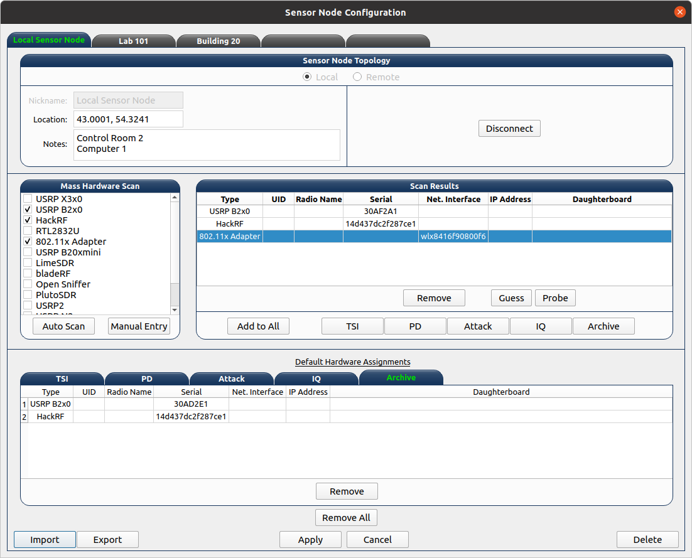
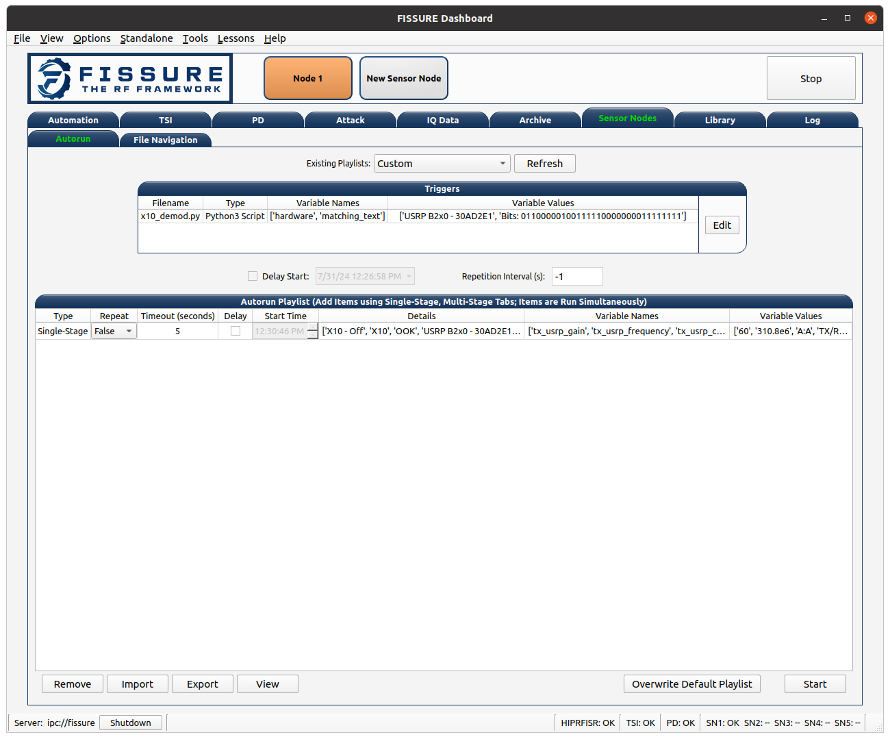
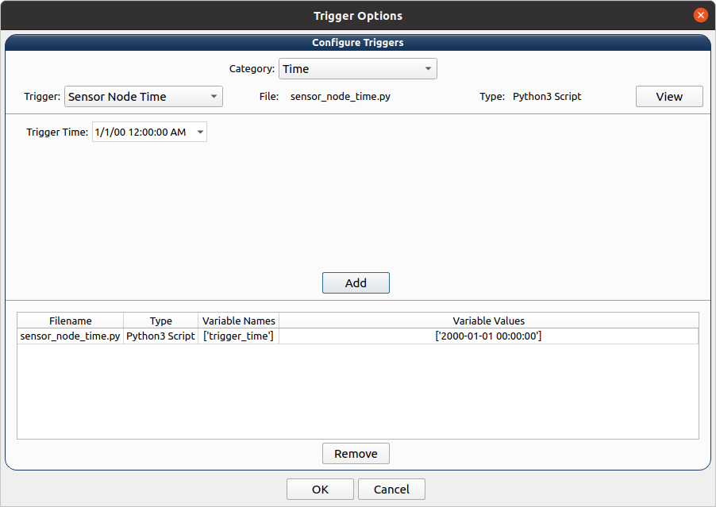

Operation¶
FISSURE is meant for people of all skill levels. Students or beginners can navigate through lessons and tutorials on how to interact with various wireless technologies. The User Dashboard offers friendly visual aids that demonstrate the RF device assessment process from start to finish. Beginners can also evade the hurdle that is traditionally associated with installing open-source tools - as the installer consists of a list of checkboxes for installing programs and dependencies. Meanwhile developers, educators, and researchers can use the framework for their daily tasks or to expose their cutting-edge solutions to a wider audience. Future development will draw heavily from feedback and interaction with the open-source community.
Start-Up Procedures¶
Open a terminal and enter fissure
Attach hardware and assign to components using the sensor node buttons (see below)
Launch a local sensor node or connect to a remote sensor node
Click the “Start” button to kick off automation and access remaining tabs
Click the “Start” buttons for individual components such as TSI or PD to start specific operations
Sensor Node Configuration Window¶
The Sensor Node Configuration window is opened after clicking on a sensor node button. The window will display the settings of an existing sensor node or allow the user to configure a new sensor node. The “Sensor Node Topology” section provides the option to choose local or remote as well as enter nicknames, locations, and notes for a sensor node. A local sensor node will run sensor_node.py on the same computer as the Dashboard. The remote option requires the IP address, DEALER port, and PUB port of the remote sensor node in order to connect. The “Ping” button will ping the IP address in the terminal to determine if the sensor node address is reachable. The connect button will establish the HIPRFISR connections to the remote sensor node. If the “Recall Settings on Connect” checkbox is checked, the saved settings from the sensor node configuration file will populate items in the Sensor Node Configuration window. The fields and tables in the window are used by the Dashboard to pull information for a sensor node and keep track of network connections.
The “Mass Hardware Scan” window allows the user to select multiple radio types that are assumed to be connected to the sensor node computer. The “Autoscan” button will perform localized hardware scans for each type selected and return the results in the “Scan Results” section. Table rows that do not contain hardware details indicate scans that were unsuccessful. The “Manual Entry” button will forgo the localized scan and add a new row to the “Scan Results” table. Once a row is created, the user can manually type in hardware details or use the “Probe” or “Guess” buttons to help populate relevant columns in the table.
Each row in the “Scan Results” table can be added to the “Default Hardware Assignments” table. This table is what is used to save the sensor node hardware information and limit what can be accessed in each tab/component in FISSURE. Individual hardware selection for any FISSURE operation is done using comboboxes throughout the Dashboard.
The “Import” and “Export” buttons will translate the sensor node configuration information to/from a YAML file. The “Apply” will save the sensor node information. The “Delete” button will disconnect and remove a sensor node that has already been saved. Be sure to disconnect from a sensor node that has not had its settings saved with the “Apply” button prior to clicking the “Cancel” button.
Automation Tab¶
Select Automation Mode
Manual¶
User confirms all phases and can edit parameters
Discovery (Disabled)¶
Mostly automated, system chooses which signals to target and process
Target (Disabled)¶
User-defined specifications, only pursue targets fitting certain criteria
Select target protocol
Configure SOI auto-select criteria (optional)
Lock search band (optional)
Check RF hardware connections
Click Start
Custom (Disabled)¶
User creates any combination of settings
TSI Tab¶
Detector/Sweep¶
Click Start
Add search bands to table
Adjust Advanced Settings
Click Update TSI Configuration
Blacklist frequency ranges
View detected signals
Search signals by frequency in library
Conditioner (Future)¶
Tune, filter, separate, record, isolate
Feature Extractor (Future)¶
Select AI/ML technique, acquire feature set
Classifier (Future)¶
Choose AI/ML models, classify protocols/emitters, compare results
PD Tab¶
Status¶
Start Protocol Discovery (PD)
Demodulation¶
Search library for flow graphs
Start demodulation flow graph
Bit Slicing¶
Search for preambles
Slice buffer by preamble
Determine field delineations
Data Viewer¶
Enter binary or hex data, perform binary operations
Fill Protocol Matching table, apply against protocols in library
Manually send hex data to PD buffer for analysis
Dissectors¶
Create Lua sissectors for new packet types
Follow lesson on Lua dissectors
Click Update Wireshark to copy all FISSURE dissectors to Wireshark folder
Sniffer¶
Start demodulation flow graph with sniffer sink
Launch sniffer flow graph created for packet type
Manually send data to sniffer port
CRC Calculator¶
Enter hex, select configuration, calculate CRC
Enter two messages with known CRCs, find polynomial
Attack Tab¶
Single-Stage¶
Select protocol, modulation type, hardware combination
Double-click attack in tree widget
Configure attack variables
Start Attack
Apply changes while running flow graphs
Multi-Stage¶
Double-click attack in tree widget or click Add button
Adjust durations and reorder attacks
Click Generate
Adjust variables, Save, Load, select Repeat
Click Start
Fuzzing (Fields)¶
Choose fuzzing Fields attack (if available)
Choose protocol subcategory
Check fields, select type, enter limits
Start Attack
Fuzzing (Variables)¶
Choose fuzzing Variables attack
Load flow graph
Select variable
Start Attack
History¶
View attack history, delete rows
Packet Crafter¶
Packet Editor
Select protocol and packet type
Edit field values
Calculate CRC (when applicable)
Assemble message
Construct packet sequence
Save sequence to file
Scapy
Put wireless interface in monitor mode
Select 802.11x and packet type
Edit field values
Click Load Data
Click Refresh, enter interval, choose interface
Click Start
IQ Data Tab¶
Record¶
Assign device to IQ hardware button
Adjust settings in reference to applicable GNU Radio sinks
Record signals to IQ file(s)
Playback¶
Configure settings or copy Record settings
Click Play
Inspection¶
Double-click flow graph or click Load, Start
Adjust variables in GUI
Crop¶
Double-click IQ file in Viewer
Enter name for cropped IQ file
Adjust Start/End samples in Viewer
Click Crop
Convert¶
Choose input file, name output file
Select file types
Click Convert
Append¶
Choose/enter file 1, file 2, output file
Check Null to append samples to the front or end
Click Append
Transfer¶
Copy folders or files to new locations
Timeslot¶
Makes copies of a message at regular intervals
Choose input file with zeros before and after signal
Adjust sample rate, period, and number of copies
Click Pad Data
Overlap¶
Plot data, store data, shift data, add data together
Resample¶
Select input file, specify output file, choose rates, resample
OFDM¶
Experimental
Normalize¶
Select input file, speciy output file, choose min/max, normalize
Viewer¶
Choose data folder
Double-click/Load File to read data
Plot All, plot range, click End to detect last sample
Use toolbar to zoom, pan, save
Click Cursor, select two points on plot, Get Range
Use functions and analysis buttons
Click gear icon to adjust options
Archive Tab¶
Download¶
Select row in Online Archive table
Click Download
Plot or delete
Replay¶
Double-click downloaded file or press Add button
Build and configure playlist
Check Repeat, click Start
Sensor Nodes Tab¶
The Dashboard Sensor Nodes tab contains operations for the active sensor node (right-click). These operations include building autorun playlists and file navigation for computers running the sensor nodes.
Autorun¶
Description
The Autorun tab is used to build, view, transfer, and initiate autorun playlists on the actively selected sensor node. The autorun feature consists of executing a playlist comprised of single-stage and multi-stage attack scripts. Each item is run simultaneously in their own thread to take advantage of more than one radio peripheral connected to the sensor node at a time. The sensor node has the option to run these playlists without interaction from the FISSURE Dashboard if the “autorun” field is set in the sensor node configuration default.yaml file.
Adding, Removing, Viewing Items
Playlist items can be added through the Single-Stage and Multi-Stage attack tabs. For Single-Stage attacks, load the attack by double-clicking the Attack Template and fill out the variable values for the attack. Click the “Add to Autorun” button to copy the attack details over to the playlist table. For Multi-Stage attacks, add the attacks and click “Generate” as normal. Click the “Add to Autorun” button to copy the multi-stage attack details over to the playlist table.
To remove a playlist item, select a row and click the “Remove” button. To view a playlist item as a single-stage or multi-stage attack, click the “View” button. Attack details cannot be edited in the playlist table.
Configuration
Playlists can have a delayed start time and date. Clicking the “Delay Start” checkbox will enable the feature. The playlist will execute immediately if unchecked. Each playlist item can have its own delayed start time if the “Delay” checkbox is checked. The value is ignored if unchecked. The timeout option for an item is used to stop the thread after so many seconds. Playlist items can finish before the timeout value depending on the nature of the script. Item threads will not repeat themselves unless the repeat option is set. A negative timeout value will cause an item to run indefinitely. The “Start” button will execute the contents of the table. Clicking the “Stop” button will end the playlist on the sensor node.
Import & Export
The “Export” and “Import” buttons are used to save and load playlists. The export feature allows the user to save a playlist to a YAML file. This file can copied directly to a sensor node to replace the /Autorun_Playlists/default.yaml file used for the autorun feature. The import feature will populate the playlist table from an exported YAML file. The “Existing Playlists” combobox is used to recall local playlists saved on the Dashboard computer in the /Sensor Nodes/Autorun_Playlists/ folder.
Overwriting Default Playlist
The “Overwrite Default Playlist” button will transfer the contents of the table and overwrite the /Autorun_Playlists/default.yaml file located on the sensor node.
File Navigation¶

Sensor Node
The “Sensor Node” frame displays file information inside folders on the the actively selected sensor node. The user can delete files or folders and download them to the Dashboard computer. Folders are compressed into a .zip file prior to the transfer.
Local
The “Local” frame is used to select where downloaded files will saved. The folder used for downloading is the value in the combobox and not a folder selected in the tree. Selected files in the tree can be deleted and unzipped. Certain file extensions such as .txt can be opened using the view button. Custom viewing capabilities will be added for more file extensions to do operations like signal plotting. Small files can be transferred over the network and saved to the currently selected sensor node folder in the combobox. Large files are not supported at this time.
Library Tab¶
Browse¶
Choose FISSURE YAML file
Look at the contents
Gallery¶
Select protocol
Click through pictures
Search¶
Enter information for signals of interest (SOIs)
Enter data values for messages in library
Choose the checkboxes to use during search
Search Library
Remove¶
Select Protocol
Choose types to remove from library
Click associated Remove button
Add¶
Create new protocol
Add modulation type, packet type, signal of interest, statistics, demodulation flow graph, and attacks to existing protocol
Log Tab¶
System Log¶
Filter messages to view from log, click Refresh
Session Notes¶
Make notes and save attack history, system log, and session notes
Status Bar¶
Triggers¶
Configuration¶
Triggers are scripts that loop indefinitely until a condition is statisfied and are used to delay the start of transmission of electromagnetic effects for single-stage attacks, multi-stage attacks, archive replay, and autorun playlists. In each of those tabs a “Triggers” section can be found as shown below for the Single-Stage attack tab.

Clicking the “Edit” button will open the following dialog for selecting and configuring triggers.
Choose the category and trigger from the comboboxes. Enter values into the user interface widgets specific to the trigger. Click “Add” to select a trigger. Multiple triggers can be selected and will be run simultaneously. Once the first trigger is complete, the remaining triggers will end and the subsequent action will be executed. Select a trigger from the table and click “Remove” to delete it. Click “OK” to save the triggers.
Trigger List¶
The following is a list of triggers integrated into FISSURE. To create new triggers refer to Creating Triggers.
Category |
Trigger Name |
Script Name |
Hardware/Requirements |
Description |
|---|---|---|---|---|
Acoustic |
Sound Threshold |
sound_threshold.py |
Microphone |
Activates once a custom audio threshold is reached on the active computer microphone |
Environmental |
Sunrise/Sunset |
sunrise_sunset.py |
Internet Connection |
Checks for sunrise and sunset time using “%S” and “%s” returns from wttr.in |
Environmental |
Temperature |
temperature.py |
Internet Connection |
Compares the temperature in a location to a value using wttr.in |
Environmental |
Weather |
weather.py |
Internet Connection |
Checks for rain, snow/sleet, clear, cloudy/fog in a city using keywords found in the “%C” returns from wttr.in |
Environmental |
Wind |
wind.py |
Internet Connection |
Checks for wind speeds above a threshold using “%w” returns from wttr.in |
Filesystem |
File Modified |
file_modified.py |
None |
Waits for a file to be modified |
Filesystem |
Folder Modified |
folder_modified.py |
None |
Waits for a folder to change the number of files it contains |
Networking |
Webserver Curl |
webserver_curl.py |
Network Connection |
Creates a local webserver that listens for a curl http://<ip_address>:<port> command to exit |
RF |
Cellular Tower |
cellular_tower.py |
RTL2832U |
Continuously runs “CellSearch” at a specific frequency to find a matching PCI/cell ID for a site |
RF |
Detect SSID |
detect_ssid.py |
WLAN Interface (Managed Mode) |
Looks for a matching SSID name using iwlist for a provided interface |
RF |
GPS Line |
gps_line.py |
GPS Receiver |
Checks if current GPS coordinates have crossed either a latitude or longitude threshold (N-S/E-W line) |
RF |
GPS Point |
gps_point.py |
GPS Receiver |
Checks current GPS coordinates until they are a specified distance from a point |
RF |
Plane Spotting |
plane_spotting.py |
RTL2832U |
Looks for an ICAO in dump1090 stdout from an RTL dongle |
RF |
Power Threshold |
power_threshold.py |
USRP B2x0 |
Looks for a signal above a power threshold at a specified frequency. Reuses the TSI fixed detector flow graphs without the GUI. |
RF |
RDS Keyword |
rds_keyword.py |
USRP B2x0 |
Looks for a keyword in the RDS printed from gr-rds for a radio station |
RF |
X10 Demod |
x10_demod.py |
USRP B2x0 |
Demodulates X10 signals for a USRP B210 and checks the flow graph stdout for matching text |
Time |
Sensor Node Time |
sensor_node_time.py |
None |
Waits for date/time to elapse |
Time |
Timer |
timer.py |
None |
Waits for N seconds after trigger script start |
Visual |
Motion Detector |
motion_detector.py |
Camera |
Checks for motion using the default camera |